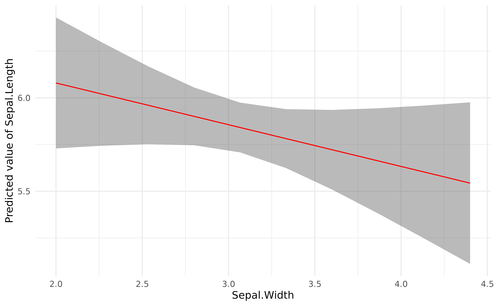
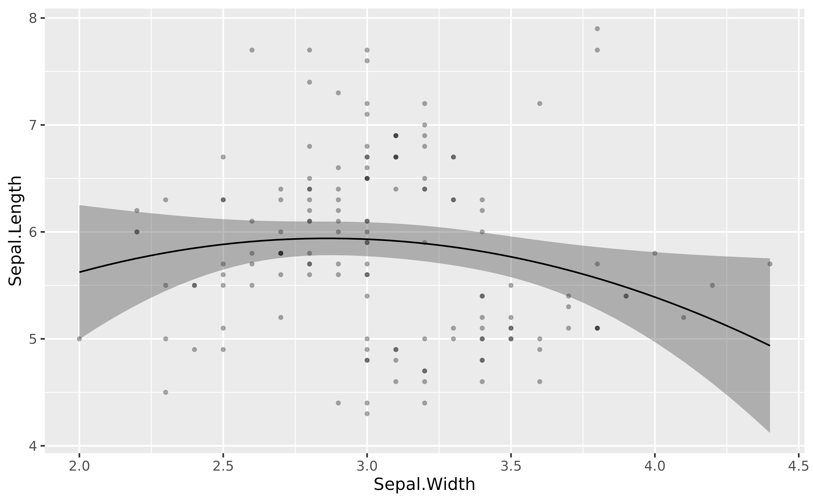
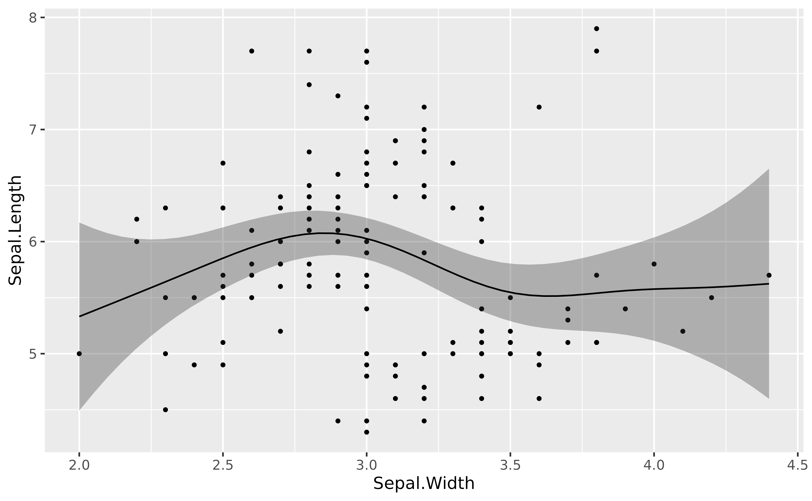

This vignette will present how to visualize the effects and
interactions using estimate_relation().
Note that the statistically correct name of
estimate_relation is estimate_expectation
(which can be used as an alias), as it refers to expected predictions
(read more).
Simple regression
Linear relationship
library(modelbased)
model <- lm(Sepal.Length ~ Sepal.Width, data = iris)
visualization_data <- estimate_relation(model)
head(visualization_data)> Model-based Predictions
>
> Sepal.Width | Predicted | SE | 95% CI
> ---------------------------------------------
> 2.00 | 6.08 | 0.18 | [5.73, 6.43]
> 2.27 | 6.02 | 0.14 | [5.74, 6.30]
> 2.53 | 5.96 | 0.11 | [5.75, 6.17]
> 2.80 | 5.90 | 0.08 | [5.75, 6.06]
> 3.07 | 5.84 | 0.07 | [5.71, 5.97]
> 3.33 | 5.78 | 0.08 | [5.62, 5.94]
>
> Variable predicted: Sepal.Length
> Predictors modulated: Sepal.Width
library(ggplot2)
plot(visualization_data, line = list(color = "red")) +
theme_minimal()
More complex regressions
Polynomial
lm(Sepal.Length ~ poly(Sepal.Width, 2), data = iris) |>
modelbased::estimate_relation(length = 50) |>
plot()
Additive Models
library(mgcv)> Loading required package: nlme> This is mgcv 1.9-1. For overview type 'help("mgcv-package")'.
mgcv::gam(Sepal.Length ~ s(Sepal.Width), data = iris) |>
modelbased::estimate_relation(length = 50) |>
plot()